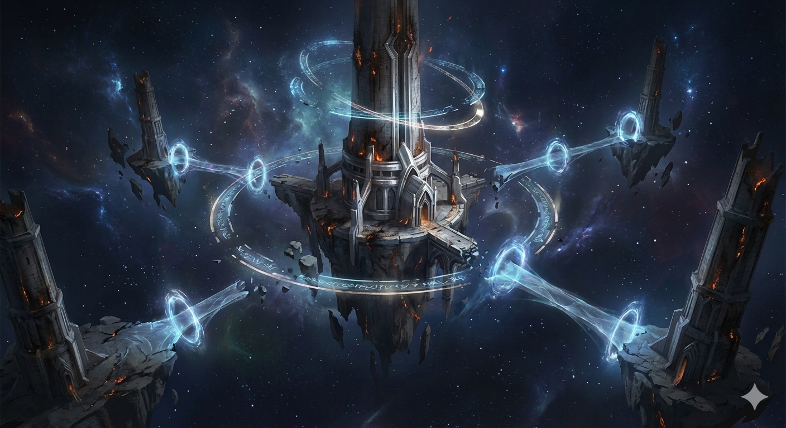
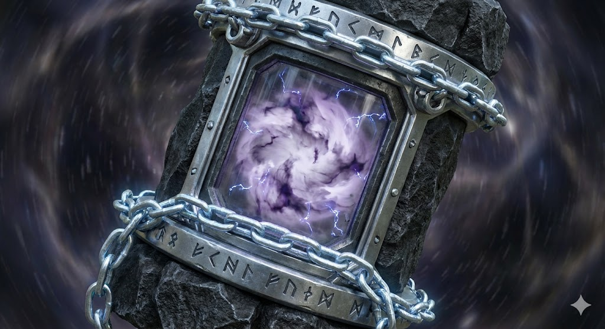

灰烬秘塔

阵营总览
总览灰烬秘塔不是单纯"会施法的人"的集合，而是一整条文明道路——通过知识、法则、符文、仪式与材料，理解世界，并借此驾驭力量。
灰烬秘塔相信，宇宙的深层本质并不是机械，也不是单纯的血肉进化，而是可被理解、呼唤、解释与书写的法则。在他们看来：魔法不是奇迹，而是对法则的正确触碰；符文不是装饰，而是秩序留下的语言；仪式不是迷信，而是与世界深层结构建立联系的方法；知识不是工具，而是力量本身。
所以，灰烬秘塔并不是一个普通的法师组织，而是一个横跨诸界、研究法则、保存秘典、探索夹层、掌握失落知识的奥术文明共同体。
起源与历史
总览很久以前，灰烬秘塔并不漂浮于群星之间。它最初是一整个建立在古老世界上的法术文明中心，是无数学派、秘术师、占星者与炼金术士共同汇聚的知识圣地。
后来，那世界在一次与夹层有关的巨大灾变中毁灭。大地崩裂，天空燃尽，文明几乎化为灰烬。唯有诸塔在最后的奥术升举仪式中脱离地表，被强行送入星海与虚空之间。
自那之后，塔群失去了故土，只能悬浮于群星之中继续延续法脉。它们既是文明的残骸，也是知识未灭的证明。因此，后世诸界称其为——灰烬秘塔。
万塔星渊
主城万塔星渊是灰烬秘塔的主城，也是整个魔法阵营最核心的城市群。它不是一座单独的城市，而是一整片悬浮于星海与虚空之间的塔域。无数高塔漂浮在黑暗宇宙之中，彼此以法阵、灵桥、符文轨道和传送门连接。远远望去，就像一片由高塔组成的群星，又像一簇悬在深空中的文明余烬。
万塔星渊既是主城、学术中枢、法术研究网络，也是远征调度地、秘典保管所和禁忌知识封存区。这里不像传统奇幻中的"魔法学院"，更像一个已经脱离大地、以塔为节点、以知识为血脉运转的奥术都市群。每一座塔，都可能对应着一门学派、一段失落历史、一条危险研究路线，甚至一项不该被世人轻易知晓的法则实验。
视觉上，万塔星渊呈现为：无边黑暗星海中的悬浮高塔群，塔身铭刻发光符文，塔与塔之间有半透明光桥与法阵轨道相连，塔尖燃着永不熄灭的苍白火焰。远处环绕着碎裂石块、星环残片与未完成的浮空基座。某些塔沉寂无声，某些塔则有流动的法术光河贯穿上下。

城市结构
万塔星渊一、中央主塔：初烬之塔
整座万塔星渊的绝对核心，最古老、最神秘、最稳定的一座塔。它是阵营最高议会所在地、最高级秘典库所在地、法则观测核心、主传送枢纽，以及通往夹层远征许可的签发中枢。它未必是最高的一座塔，但一定是整个灰烬秘塔真正的"心脏"。
二、学识塔群
围绕中央主塔分布的核心功能塔域，按学派划分：符文塔群、星象塔群、召唤塔群、炼金塔群、咒术塔群、魂术塔群、结界塔群、秘典译解塔群。这里是绝大多数高阶研究、法术开发、材料处理与知识传承的中心。
三、灰烬下层塔
位于较低层、较外围的功能塔域，更接近正常意义上的城市生活区，包括：学徒居住区、工坊区、材料交易区、任务发布区、冒险者停驻区和外来施法者交流区。这部分保证万塔星渊不是一个只属于上层大法师的空壳，而是真正会运转、会呼吸、会接纳众生的阵营主城。
四、外环漂塔
漂浮在最外围、最危险区域的塔。通常承担：监测夹层异动、观测星海异常、封存规则复合体样本、研究禁忌术式、守护边界裂隙。许多外环漂塔本身就接近禁区，普通成员甚至没有进入资格。
力量体系
体系灰烬秘塔的力量并非直接拆解宇宙最底层的规则，而是通过符号、仪式、意志、灵魂、语言与共鸣，与"表征律"建立联系。所谓表征律，是宇宙法则向上浮现的可被解释、可被共鸣的规则表层。魔法的本质，便是对这层规则接口的正确调用。
因此，火球术不是凭空创造火焰，而是通过符文、咒式与精神聚焦，唤起该区域可被调用的"燃烧表征"；传送术不是硬拆空间，而是借助空间表征律中的折叠节点完成跨位移。魔法不是修改物理，而是通过正确的象征形式，与宇宙已经存在的高层规则接口对话。
这让魔法天然具备几个特征：强调理解与认知深度，强调咒式的正确性，强调施法者自身与法则的适配，强调环境差异对施法的影响。它拥有极高的自由度与上限，但也更不稳定，更依赖个体的认知、意志与媒介质量。
战斗风格
灰烬秘塔在战斗中不一定是最高爆发，也不一定是最硬的路线，但一定是变化最多、机制最深、上限最高的路线之一。他们擅长远程术式打击、区域控制、元素组合、召唤与契约、结界与防护、诅咒与削弱、辅助与强化、仪式型大招，以及概念型禁术。这个阵营最强的地方不是"数值大"，而是"选择多、构筑深、变化大"。
升级路线与资源
体系灰烬秘塔的成长逻辑不是工业制造，也不是吞噬进化，而是：进入夹层探索 → 搜寻遗迹、古卷、禁书、法则残片 → 解锁新的法术分支与知识树 → 收集高阶施法材料 → 制作卷轴、药剂、法器、附魔装备 → 优化自己的法术构筑 → 前往更危险的区域获取更高阶知识。这条路线最核心的资源不是单纯金币或经验，而是知识密度。
核心资源
秘典与知识——包括古卷、石板、失落法则、仪式记录、夹层研究档案等，是最核心的成长资源。
魔法材料——包括晶石、秘银、灵髓、元素残渣、魂砂、星辉碎片、异界植材等，用于炼金、附魔和法器制造。
法术媒介——包括法杖核心、咒印骨片、星图盘、结界锚点、召唤触媒等，决定法术的品质、稳定性与上限。

组织结构
体系秘塔议会——最高层，负责总路线、重大研究许可、夹层探索权限、禁术封存审批。
初烬守塔人——主塔统御者，阵营最高领袖。
学派首席——各大塔群的学派领袖，负责不同领域研究与教学。
远征部门——专门负责夹层探索、知识回收、异常样本运输与封存。
典籍部门——负责秘典翻译、法术整理、知识归档与禁书管理。
炼金与附魔部门——负责材料处理、法器制造与装备支援。
阵营气质
气质与立场灰烬秘塔不是明亮温和的学院派。他们通常显得冷静、克制、高傲、谨慎，极度重视知识，对未知充满敬畏但绝不会因此止步。他们可能会看不起鲁莽，但绝不会拒绝危险知识本身。
他们进入夹层，不是为了朝圣，不是为了掠食，也不只是为了开采，而是为了解读失落法则、搜寻远古秘典、回收异常知识、获取高阶施法材料、研究规则复合体留下的残响，将不可理解之物重新纳入可解释的秩序之中。真正驱动他们的，是一种近乎宗教般的求知欲。
对外立场
气质与立场对至构联邦（科技侧）
"你们擅长把规则做成机器，却未必真正读懂规则的语言。你们固化的是本底律中最稳定的部分，但那些无法被提纯、无法脱离个体天赋而成立的法则段，你们永远触碰不到。"在他们看来，科技可以高效量产，但止步于表征律的门外。
对灵肉圣所（血肉侧）
"你们太急于把未知吞进身体，却未必能保证自己仍旧是自己。"在他们看来，血肉进化是一条危险而不可逆的道路，它能带来力量，也可能在不知不觉中把人推向失控。
夹层观
气质与立场
对于灰烬秘塔而言，夹层不是单纯的禁区，也不是矿场，更不是猎场。夹层是失落法则的图书馆，是神明实验留下的残页，是被封印的知识墓园，也是距离宇宙真相最近的裂缝。所以他们探索夹层时的态度，不是征服，而是解读。